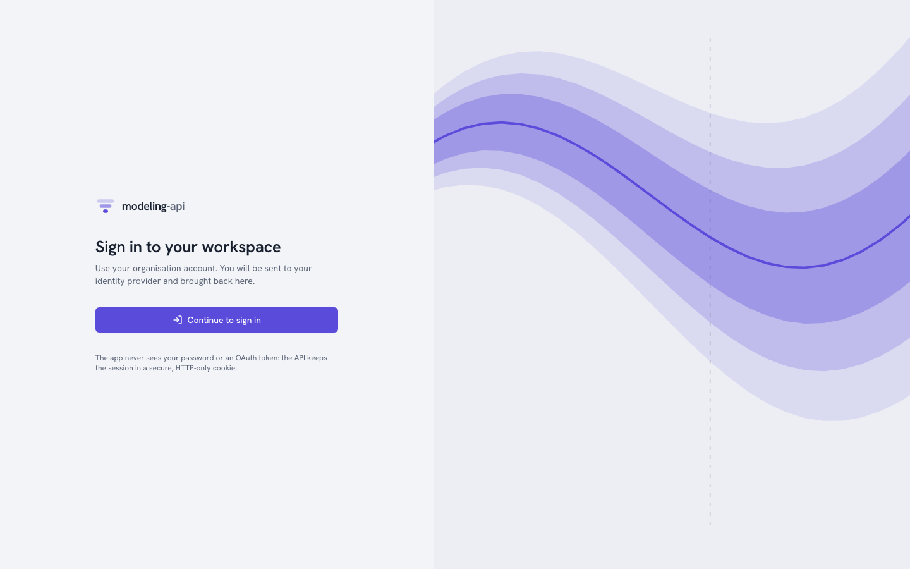
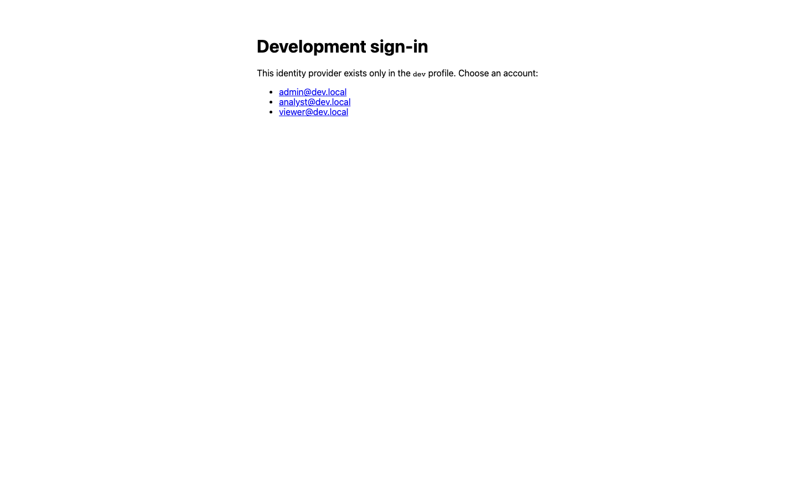

Authentication v0.3¶
A v0.3 deployment answers 401 UNAUTHENTICATED to all callers that it does not know. There
are three ways in, one for each type of caller:
| Caller | Signs in with | Sends | Reference |
|---|---|---|---|
| A person in a browser | The identity provider of the organisation (OpenID Connect) | An HttpOnly session cookie. The app never sees a token. |
Browser sign-in |
| A person in a terminal | mapi login: the same provider, from the command line |
The ID token of the provider as Authorization: Bearer |
The command line |
| A program | Nothing. A person mints an API token for it. | Authorization: Bearer mapi_… |
API tokens |
In all three ways, the caller is a user (usr_…) with roles in projects. The platform
checks each request against those roles at that time
(Administration). This page is for the persons who sign in and
who set up sign-in. For the protocol details (cookies, CSRF, PKCE, JWKS, the database roles),
see Authentication and tenant isolation.
Browser sign-in¶

If you open the web app without a session, it shows Sign in to your workspace.
Continue to sign in goes to /auth/login on the API. The API sends the browser to the
identity provider. After the sign-in at the provider, the browser comes back to the page
where it started.
The API does all the OpenID Connect work. This work is the authorization code with PKCE, a
nonce, and the verification of the ID token against the keys of the provider. The API keeps
the tokens. The browser holds only two cookies: a __Host- session cookie that scripts
cannot read, and a CSRF token. A session ends after 2 hours without activity or after 12
hours in total. It also ends when you click Sign out.

After you sign in, the project switcher at the top left lists each tenant and project
where you have a role. It shows that role and the trust tier of the tenant. All that the app
shows and does applies to the selected project. The app sends the project as
X-Mapi-Project on each request. The avatar menu shows who you are. A shield marks a
platform operator.
The first sign-in of a person creates their user from the (issuer, subject) of the
provider. If the provider tells that the e-mail is verified, the platform also claims all
invitations to that address. Invitations come from Add member (a tenant admin) or
--admin-email (an operator). A person with no membership yet sees You are not in a
project yet.
The development IdP¶
make dev (and Docker Compose) run the servers in the dev profile. This profile mounts a
small OpenID provider inside the API at /dev/idp. Then sign-in works offline, through
exactly the same code path as a real provider. It uses RS256-signed ID tokens, PKCE and
single-use codes.

There are no passwords. All persons who can get to a dev API can sign in as any listed
account. The accounts come from MAPI_DEVIDP_USERS:
| Account | Gets at start-up |
|---|---|
admin@dev.local |
Admin of the default tenant and a platform operator |
analyst@dev.local |
runner in default/default |
viewer@dev.local (and all other addresses) |
viewer in default/default |
Scripts sign in without a browser with mapi_client.oidc.dev_idp_login(api_url, email).
This function does the same flow and returns an ID token that is valid for an hour.
make seed, the end-to-end tests and the walkthroughs on this page use it. A server in any
other profile answers 404. Thus you cannot use the function against production. The
walkthrough below is docs/snippets/auth_tour.sh. The test suite runs it against make dev:
API=${MAPI_URL:-${MAPI_API_URL:-http://127.0.0.1:8000}}
curl -s -o /dev/null -w 'anonymous: %{http_code}\n' "$API/v1/me" # 401: sign in first
# dev profile only: what `mapi login` gets from a real identity provider, without a browser
ID_TOKEN=$(python -c 'import sys; from mapi_client.oidc import dev_idp_login
print(dev_idp_login(sys.argv[1], "analyst@dev.local"))' "$API")
curl -s -H "Authorization: Bearer $ID_TOKEN" "$API/v1/me" \
| jq -c '{email: .principal.email, auth, operator,
projects: [.tenants[].projects[] | "\(.tenant_id)/\(.project_id) \(.role)"]}'
anonymous: 401
{"email":"analyst@dev.local","auth":"session","operator":false,"projects":["acme/growth admin","acme/retail admin","default/default runner"]}
MAPI_STACK_PROFILE=single-tenant make dev turns off sign-in fully. This is the v0.2
behaviour: each request acts as the local administrator of default.
Set up a real identity provider¶
The API can sign in persons with any OpenID Connect provider that has the
authorization-code flow. The provider needs an issuer whose
/.well-known/openid-configuration lists an authorization endpoint, a token endpoint and a
JWKS.
Google accounts¶
Google accounts are the default of the Google Cloud deployment. They are the simplest selection for an organisation on Google Workspace.
- In the Google Cloud console (APIs & Services → Credentials), create an OAuth client
ID of type Web application. Set the authorized redirect URI to
https://<your app domain>/auth/callback. - Give the id to Terraform (
oidc_client_idinterraform.tfvars). Give the secret as the ephemeral variableTF_VAR_oidc_client_secret, withoidc_client_secret_version = 1(step 4 of the deployment). - If you do not use Terraform, set
MAPI_OIDC_ISSUER=https://accounts.google.com,MAPI_OIDC_CLIENT_IDandMAPI_OIDC_CLIENT_SECRETon the API. - Put the e-mails of the operators in
MAPI_OPERATOR_EMAILS. - Create the tenant of each organisation with an
--admin-email(Administration).
MAPI_OIDC_EXTRA_PARAMS='{"hd": "acme.com"}' selects a Workspace domain in advance in the
account chooser of Google. It is only a hint. Memberships control who can do what. The
e-mail domain never controls it.
Identity Platform¶
Terraform also enables Identity Platform in the control project
(infra/terraform/modules/control/identity.tf). It registers the domain of the app as an
authorized domain. It turns off anonymous sign-in and, by default, e-mail/password sign-in.
You add SAML and OIDC providers for enterprise single sign-on in Identity Platform. Add them
in the console, or with google_identity_platform_*_idp_config resources outside the module.
Keep these resources outside the module, because their secrets must not be in its state.
Known gap in v0.3
The sign-in of the API cannot use the tokens of Identity Platform yet. You get those
tokens (issuer https://securetoken.google.com/<project>) with the client SDK of
Identity Platform. That issuer has no authorization-code endpoint for the API to
redirect to. Until that adapter exists, point MAPI_OIDC_ISSUER at Google (above). As an
alternative, point it directly at the own OpenID provider of the organisation (below).
Until then, the Identity Platform configuration that Terraform creates causes no
problems.
Other providers¶
Okta, Microsoft Entra ID, Keycloak, Auth0 and all other standard providers work in the same way:
- Register a web client with the redirect URI
https://<your app domain>/auth/callback. - Set
MAPI_OIDC_ISSUERto its issuer. - If its discovery document is not under the issuer, set
MAPI_OIDC_DISCOVERY_URL. - Set
MAPI_OIDC_CLIENT_IDandMAPI_OIDC_CLIENT_SECRET.
ID tokens must have a signature with an asymmetric algorithm (MAPI_OIDC_ALGORITHMS,
default RS256,ES256).
The command line¶
mapi login signs in with the same provider, from the terminal:
mapi --profile prod --url https://api.mapi.example login \
--issuer https://accounts.google.com --client-id 1234-abc.apps.googleusercontent.com
mapi --profile prod login --device # no browser here: enter a code elsewhere
mapi --profile ci login --with-token < ci.token # an API token, read from stdin
mapi whoami # who, how, and your projects and roles
- With a browser, it opens the page of the provider. It listens one time on
127.0.0.1for the redirect (authorization code with PKCE). --deviceshows a short code. Type the code on a different device. This works with providers that support the device flow.--with-tokenreads an API token from standard input and stores it instead (CI).
The CLI keeps the sign-in in credentials.json next to the config file (mode 0600). It
sends the ID token of the provider as Authorization: Bearer. The API accepts such a token
only when its audience is one of MAPI_OIDC_CLI_CLIENT_IDS (default mapi-cli). Register
the CLI with your provider as a public installed app client. Use a loopback redirect, PKCE
and the openid email scopes. The installed-app clients of Google need a client secret. The
CLI reads it from MAPI_OIDC_CLIENT_SECRET and never shows it.
To sign in against the development IdP, use this command:
Then select the project where commands act. Use mapi use <tenant>/<project>, --project
or MAPI_PROJECT. mapi whoami shows who you are, how you signed in and your projects. See
The command line.
API tokens¶
Programs never sign in. A person mints a token for them in one project, with only the scopes that the program needs. The token then acts as that person, but only in that project. Its scopes limit what it can do. To mint a token, use one of these methods:
- In the web app, use Tokens → New token (Administration).
- From the CLI, use
mapi tokens create. - Over HTTP, use this request:
CREATED=$(curl -s -X POST "$API/v1/tokens" -H "Authorization: Bearer $ID_TOKEN" \
-H 'X-Mapi-Project: default/default' -H 'Content-Type: application/json' \
-d '{"name": "auth-guide", "scopes": ["models:read"], "expires_in_days": 1}')
TOKEN=$(jq -r .secret <<<"$CREATED") # shown once: store it now
TOKEN_ID=$(jq -r .token.id <<<"$CREATED")
jq -c '.token | {id, display, scopes, project: "\(.tenant_id)/\(.project_id)", expires_at}' \
<<<"$CREATED"
{"id":"tok_01m50mxfqh4k95ed2dv2jc005v","display":"mapi_hhb9gjzf_…","scopes":["models:read"],"project":"default/default","expires_at":"2026-10-16T20:44:02.161164Z"}
The secret (mapi_<prefix>_<secret><checksum>) is in the response one time only. The
server keeps only an HMAC of it. Lists show the prefix (mapi_hhb9gjzf_…). Clients and
secret scanners use the built-in checksum to reject an incorrect or invented token. They do
not have to ask the server.
A program sends the token as a bearer. The token is bound to its project, so it does not
need an X-Mapi-Project header:
curl -s -H "Authorization: Bearer $TOKEN" "$API/v1/me" | jq -c '{auth, operator}'
curl -s -H "Authorization: Bearer $TOKEN" "$API/v1/runs?limit=2" \
| jq -r '.items[] | "\(.id) \(.kind) \(.state)"' # bound to its project: no header needed
The Python client accepts the token as Client(token=…) or MAPI_TOKEN. The CLI accepts it
as --token, MAPI_TOKEN or mapi login --with-token
(Python client). Both refuse to send a token
over plain HTTP to an address that is not a loopback address.
What a token cannot do¶
Scopes can only make a token more limited. A models:read token cannot start a run, also
when its owner is a runner. A token cannot act in a different project. No token has operator
powers:
# models:read cannot spend compute, even though its owner is a runner
curl -s -X POST "$API/v1/runs" -H "Authorization: Bearer $TOKEN" \
-H 'Content-Type: application/json' -d '{"kind": "fit", "spec": "spec://default/eu-geo-mmm"}' \
| jq -c '{status, code}'
# a token never acts outside its project, or as an operator
curl -s -H "Authorization: Bearer $TOKEN" -H 'X-Mapi-Project: acme/growth' "$API/v1/runs" \
| jq -c '{status, code}'
curl -s -H "Authorization: Bearer $TOKEN" "$API/v1/admin/tenants" | jq -c '{status, code}'
{"status":403,"code":"FORBIDDEN"}
{"status":403,"code":"FORBIDDEN"}
{"status":403,"code":"FORBIDDEN"}
Tokens expire. The default is 90 days, and the maximum is 365 days. If you revoke a token, or remove its owner from the project, the token stops at the next request:
curl -s -o /dev/null -w 'revoke: %{http_code}\n' -X DELETE "$API/v1/tokens/$TOKEN_ID" \
-H "Authorization: Bearer $ID_TOKEN" -H 'X-Mapi-Project: default/default'
curl -s -H "Authorization: Bearer $TOKEN" "$API/v1/me" | jq -c '{status, code}' # at once
The platform writes failed uses of a known token to the audit log as token.auth_failed.
Examples are an incorrect secret, or an expired or revoked token. No error ever shows the
token.
Who can see what¶
| Browser session | mapi login |
API token | |
|---|---|---|---|
| Identity | The person | The person | The person who minted it |
| Projects | Each project with a role (select one for each request) | Same | Only the project where it was minted |
| Permissions | The role | The role | The role and the scopes |
| Operator powers | Yes, for operators | Yes, for operators | Never |
| Needs CSRF token | Yes, for changes | No | No |
| Ends | 2 h without activity, 12 h total, sign-out | mapi logout. If the provider gave a refresh token, the CLI uses it to renew the ID token. If not, use mapi login again. |
Expiry or revocation |
Where next¶
- Administration: tenants, members, roles, tokens, quotas and audit.
- Authentication and tenant isolation: the view of the operator, with cookies, CSRF, row-level security and Pub/Sub push authentication.
- Tenancy and authentication: the concepts and the request-authorization pipeline.